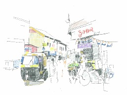

Druck, Web und Multimedia Industrie
Logo-Design, Infografik und Banner-Design
Ich habe mehr als 2 Jahre Erfahrung als Grafikdesigner im Bereich Printmedien und digitales Marketing. Ich habe praktische Erfahrung mit Logo-Design, Typografie, Farbe, Web-Layout-Design, Druckproduktion, Bildauswahl und Verpackungsdesign. Außerdem beherrsche ich die Programme Indesign, Photoshop, Illustrator und CorelDraw.
Logo-Design, Infografik und Banner-Design
Ich habe mehr als 2 Jahre Erfahrung als Grafikdesigner im Bereich Printmedien und digitales Marketing. Ich habe praktische Erfahrung mit Logo-Design, Typografie, Farbe, Web-Layout-Design, Druckproduktion, Bildauswahl und Verpackungsdesign. Außerdem beherrsche ich die Programme Indesign, Photoshop, Illustrator und CorelDraw.


Circulania Service GmbH
High fidelity web wireframe
At Circulania I had to take participation in the website redesign from the UX perspective and the main goal was here to be a guardian of the happy and seamless customer journey.
High fidelity web wireframe
At Circulania I had to take participation in the website redesign from the UX perspective and the main goal was here to be a guardian of the happy and seamless customer journey.


CompuGroup Medical SE
Low fidelity Mobile app wireframe
m Rahmen eines Forschungspraktikums musste ich ein fundiertes Konzept für einen Gamification-basierten Ansatz entwickeln. Hier habe ich einen kompletten Low-Fidelity-Prototyp für eine mobile Anwendung entworfen, der Entwicklern helfen wird, die agile Methodik mit den hinzugefügten Gamification-Elementen leicht zu erlernen.
Low fidelity Mobile app wireframe
m Rahmen eines Forschungspraktikums musste ich ein fundiertes Konzept für einen Gamification-basierten Ansatz entwickeln. Hier habe ich einen kompletten Low-Fidelity-Prototyp für eine mobile Anwendung entworfen, der Entwicklern helfen wird, die agile Methodik mit den hinzugefügten Gamification-Elementen leicht zu erlernen.


Zeichnung und Design Industrie
Beobachtungszeichnen und Website-Design
Als Teil meiner künstlerischen Fähigkeiten mochte ich schon immer Skizzen und Zeichnungen, die sowohl Gedächtniszeichnungen, Beobachtungszeichnungen als auch Freestyle-Skizzen umfassen. Als Teil meiner Web-Design-Fähigkeiten habe ich Erfahrung mit der Erstellung von UI-Elementen mit Photoshop. Ich habe Erfahrung mit Photoshop für moderne Webdesign-Workflows sowie mit responsiven Webdesign-Projekten, der Verwendung von Vorlagen und dem Export für das Web.
Beobachtungszeichnen und Website-Design
Als Teil meiner künstlerischen Fähigkeiten mochte ich schon immer Skizzen und Zeichnungen, die sowohl Gedächtniszeichnungen, Beobachtungszeichnungen als auch Freestyle-Skizzen umfassen. Als Teil meiner Web-Design-Fähigkeiten habe ich Erfahrung mit der Erstellung von UI-Elementen mit Photoshop. Ich habe Erfahrung mit Photoshop für moderne Webdesign-Workflows sowie mit responsiven Webdesign-Projekten, der Verwendung von Vorlagen und dem Export für das Web.
- 


Kontakt
Duisburg - Deutschland
+49-176-40441148
© 2021 All Right Reserved